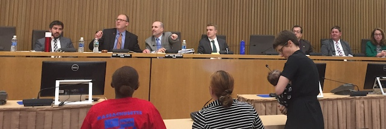
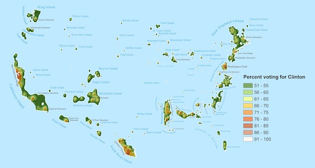

2017-06-15 08:00

On June 13th I headed up to the Massachusetts State House with a group from the Coalition for Social Justice working with Raise Up Massachusetts.
We were there to show support for Paid Family and Medical Leave. Several women in our group offered personal stories explaining why the legislation is so important. Many families in this state are already only a single paycheck away from financial ruin. Family Leave holds out a lifeline to families in the impossible situation of having to choose between keeping their job (and their home) – or taking care of a sick parent, a new child, or even themselves. For most of us this is a matter of economic and social justice.
The Joint Committee conducting hearings was patient and thoughtful and often gave speakers a minute or two more than their allotted time to speak. The committee heard from mothers holding infants and restless toddlers. It listened to testimony from fathers, gay parents, economists, healthcare experts, people who had experienced catastrophic medical crises, or had retired early or sacrificed to care for a sick parent. Present also were members of the business community holding both supporting and opposing views.
One group of business people offering testimony in support of Family Leave made a special impression on the committee. They were there to lobby for the bill as a perk to offer their high-tech employees. The committee showered them with disproportionate interest, praise, and questions. It seemed a bit odd – even just plain wrong – that offering Family Leave as another fringe benefit for Route 128 employers might be what actually sells the bill to the Democratic legislature. Forget the cute babies.
Then testimony was heard from Massachusetts Teachers Association president Barbara Madeloni, who told the Committee how important Family Leave was for her union’s 100,000 members, many of them women. Madeloni expressed a little surprise at the inordinate interest in a benefit program for entrepreneurs, reminding the Committee Family Leave was really a matter of economic and social justice. And so it is.
This example illustrates that there are significant differences between progressive and mainstream Democrats. Often our goals align – but we view the world from very different perspectives.
* * *
Nathan J. Robinson, in Current Affairs, writes that these differences are often downplayed as misguided tactics, dogmatism, impatience, mendacity or immaturity – while, In fact, they are simply different ways of looking at the world:
“The core divergence in these worldviews is in their beliefs about the nature of contemporary political and economic institutions. The difference here is not “how quickly these institutions should change,” but whether changes to them should be fundamental structural changes or not. The leftist sees capitalism as a horror, and believes that so long as money and profit rule the earth, human beings will be made miserable and will destroy themselves. The liberal does not actually believe this. Rather, the liberal believes that while there are problems with capitalism, it can be salvaged if given a few tweaks here and there."
But we are in the fight of our lives to protect a democracy and a functioning government. Progressives and liberals both recognize that, whatever the differences, we share more than enough common values to work together. And we can’t lose sight of that.
A recent piece in the New York Times by Alexander Burns and Jonathan Martin deceptively paints Jon Ossoff’s congressional bid in Georgia as a fight between the Liberal and progressive wings of the Democratic Party, one that “realist” Democrats are waging instead of progressives:
“Outside Atlanta on Friday, Jon Ossoff offered a decidedly un-Sanders-like vision of the future in Georgia’s Sixth Congressional District, a conservative-leaning patchwork of office plazas and upscale malls, where voters attended his campaign events wearing golf shirts and designer eyewear.”
Ossoff’s campaign style indeed reflects the blue-red sensibilities of his Congressional district. Drilling into Ossoff’s positions he looks like any other liberal Democrat – entrepreneur, Zionist, pro-choice, not explicitly in favor of single-payer healthcare, vague on foreign policy positions but eager to strengthen the military and support an undeclared war against ISIS. Ossoff is a baby Bill Keating.
Yet despite the New York Times’ mis-characterization of Ossoff as a DNC project, his campaign was in fact first supported by progressive organizations Democracy for America and Our Revolution. Only after the first round Georgia “jungle” primary did the Democratic National Committee offer Ossoff any help.
But let’s fast-forward past the finger-pointing right to the good news:
Far from adopting a dogmatic strategy, progressives embraced a guy who represented enough of their values that they could live with him, gave generously to his campaign, and stepped into a vacuum created by the DNC. And to the DNC’s credit they ultimately joined the fight and are now doing the same in other races.
In Washington Monthly David Atkins also took issue with the New York Times piece:
"As usual, the intramural battle on the left is being framed as one between intelligent pragmatists who want to win, and unrealistic ideologues who want to make themselves feel good.
Like me, Atkins sees hope. Progressives have a winning perspective and pragmatists have institutional memory and experience running campaigns. He writes that “the populist left’s premises have proven themselves over time. Clinton’s own SuperPAC did the research and discovered that the Obama-Trump switchers who made the difference in the election were driven by economic anxiety and a loss of faith in the Democratic Party…” Then Atkins argues:
“But establishment pragmatists also have points that cannot be ignored. First and foremost is the reality that the path to retaking the House lies less in rural economically ravaged districts full of angry voters, than in bourgeois suburban neighborhoods uncomfortable with Trump’s lack of seriousness and gentility.”

Keep in mind that this is not a progressive disagreeing with a liberal, but a liberal Democratic political consultant splitting hairs with fellow liberals. I don’t agree with Atkins that avoiding races in places like Montana and Idaho is wise. After all, the Democratic Party is barely hanging on in its urban archipelagos. Democrats need to return to a Fifty State strategy and only grassroots activism can make that a reality. Progressive Arizona Democrats point out that, in Tucson alone, 44,000 seniors live in trailer parks and only Republicans are talking to them. The future for these older Americans looks increasingly bleak as healthcare becomes unaffordable and the social safety net is deconstructed.
Failure to engage is insane and irresponsible.
Atkins himself demonstrates that there is a legion of Democratic political experts who can be repurposed for progressive campaigns. Bernie Sander’s media guy, Tad Devine, gave a talk in Westport, Massachusetts just last night delivering much the same message. And at the same talk former New Bedford mayor Scott Lang provided historical context for the party’s missteps and his own views for getting it back on track. Institutional memory and experience.
But whatever the outcome of this relationship, eventually the Democratic Party must unequivocally choose between a progressive and a centrist message. And this is already starting to happen. Young voters have not been well-served by crushing student debt, endless war, and dim prospects for good jobs and their own homes. Senior citizens also face an uncertain future. Call it neoliberalism, globalism, or any euphemism you like, but Capitalism’s warts are showing and progressivism is on the rise.
Global economic injustice and insecurity is as real and terrifying as global warning. Democrats should remember – and with considerable pride – how the New Deal met the challenges of a global economic crisis head-on 85 years ago, literally saving the lives of millions of Americans.
We can do it again but it’s going to requires a completely different perspective.